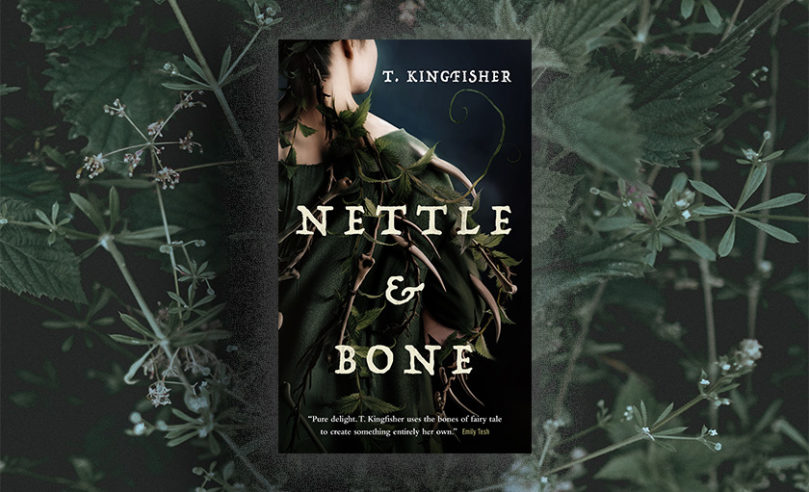

Nettle & Bone by T. Kingfisher reads like an old fairy tale dragged through mud, grief, and strange magic. The novel has an undertone of horror and combines dark humor, unique fantasy elements, and the nuance of being human and fostering different kinds of relationships into a story where there is no prince charming to save the day but a sister who cares deeply.
What made the book stand out to me was how unusual and real the characters were. Instead of powerful heroes, the story follows damaged, lonely, intricate people that you can't help but relate to and a bone dog. The world feels eerie and grounded at the same time with very vivid imagery and just enough world building. It felt like stepping into a world where I yearned to explore more.
The atmosphere was one of my favorite parts of the novel. The story constantly feels haunted, but it also has moments of humor that make the characters feel human. Kingfisher's prose was nothing short of incredible as I loved the way she fleshed everything out and I really liked the ending. For a shorter novel this one made me feel a breadth of emotions and I really loved it overall.
I would recommend this book to readers who enjoy fantasy stories with darker themes, folklore-inspired worlds, and emotionally driven characters.
View the Goodreads page for Nettle & BoneCover image source: https://www.torforgeblog.com/2022/01/30/excerpt-nettle-bone-t-kingfisher/